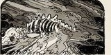
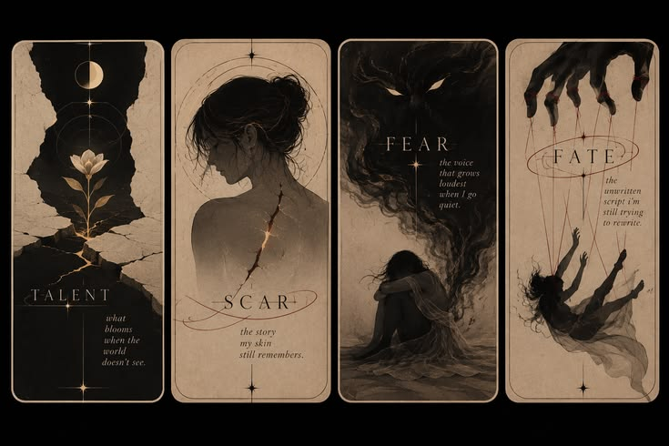
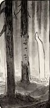

Работы
Вдохновения
- Иван Билибин — сказочные иллюстрации
- Славянская мифология
- Баба-яга и избушка в лесу
- Behance — идеи для дизайна

Внешние ссылки
- MDN — справочник по CSS
- W3Schools — уроки CSS
- CSS Zen Garden
- Google Fonts
- Coolors — подбор палитры
- css hover link
Это div с рамкой (border) и внутренним отступом (padding).
